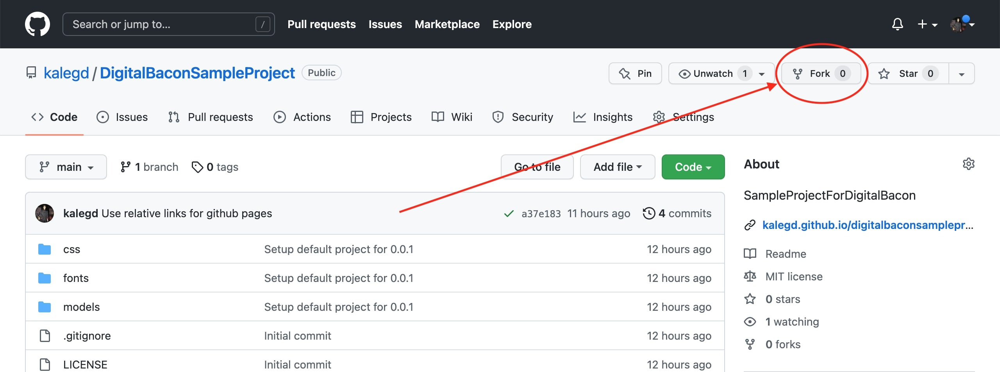
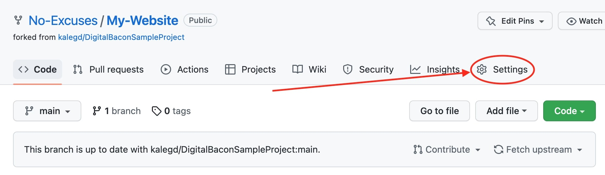
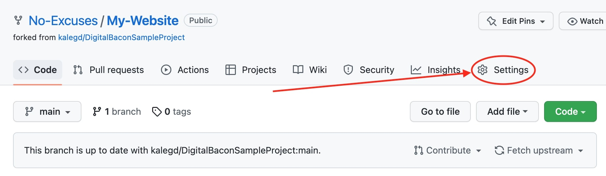
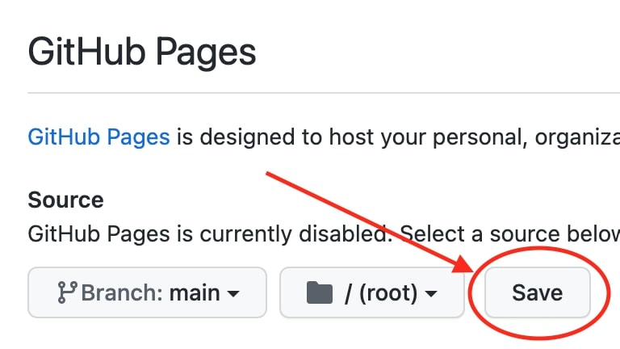
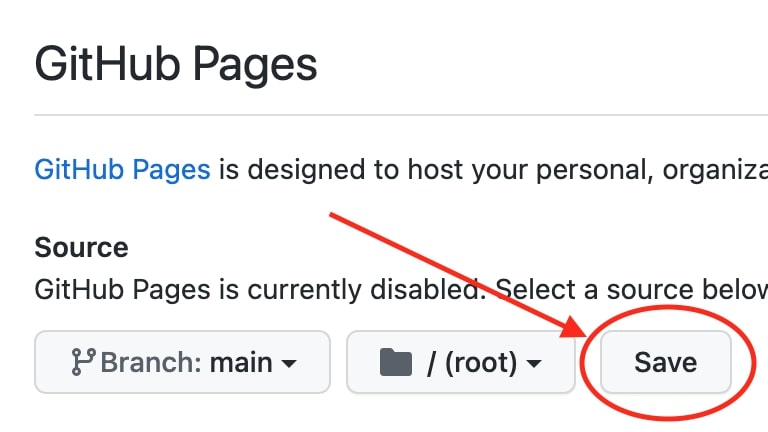
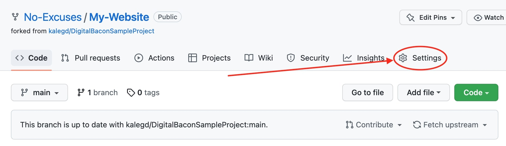
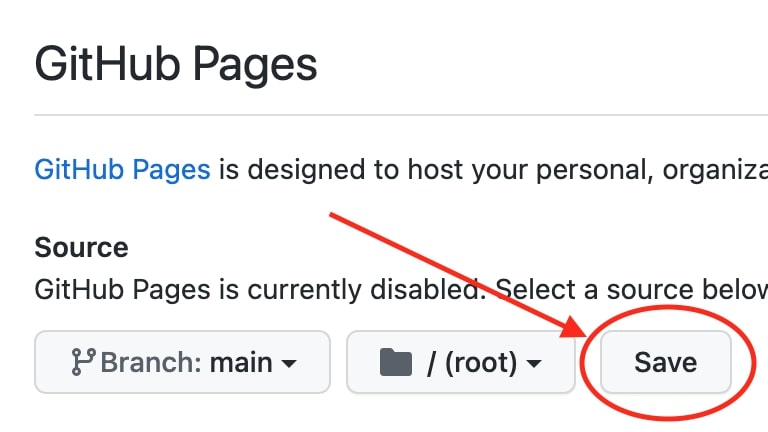

Digital Bacon
Hosting on GitHub
Hosting your Digital Bacon website on GitHub is arguably the easiest self hosting solution. Just follow the steps below to host it yourself
- Fork this repository (feel free to name it whatever you like)
- Go to your forked version of the repository
- Replace my-project.zip with your Digital Bacon project file
- Go to Settings -> Pages
- Set the source to main (or whatever your desired branch name is)
- Save your GitHub Page settings
- GitHub will present you the URL to access your website! (It may take a few minutes for the website to be running
See the below images for further guidance

 


 




Hosting on AWS
There a many different ways to host a Digital Bacon website on AWS. We'll be going over a simple solution that sets up a static website on S3 using the instructions below. This guide assumes prior familiarity with GitHub and AWS
Please note, hosting on AWS does cost money, please check their current prices for more information
- Sign into your AWS account (or create one if you do not already have one)
- Create an S3 Bucket
- Clone the contents of the sample project in this GitHub repository into a local workspace
- Replace my-project.zip with your Digital Bacon project file
- Copy the contents of your workspace into the S3 Bucket
- Go the the Properties section of your S3 Bucket
- Scroll down to the Static website hosting section and click the Edit button
- Make sure "Enable" and "Host a static website" are both checked
- Use index.html for the Index document (unless you have changed the name of the document)
- Save your changes
- Find your website URL in the Static website hosting section
To support VR headsets, you will need to serve your website over https instead of http. This can be done by having a domain name, ssl certificate, and setting up a Cloudfront distribution. You can find many resources for hosting online